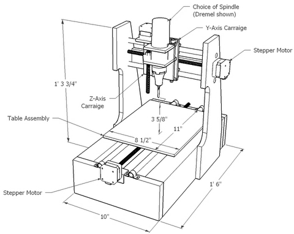
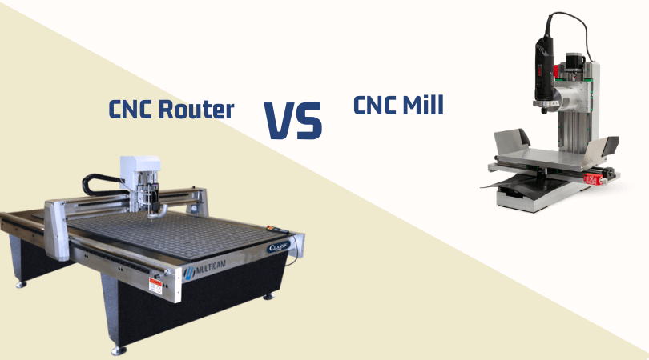

CNC
CNC
Computer Numerical Control is the automated control of machining tools (drills, boring tools, lathes) and 3D printers by means of a computer. A CNC machine processes a piece of material (metal, plastic, wood, ceramic, or composite) to meet specifications by following a coded programmed instruction and without a manual operator.
We've already talked about some kinds of CNC machines. Today we'll focus on CNC Milling.
 Speeds and Feeds
The phrase "speeds and feeds" refers to two separate velocities in machine tool practice: cutting speed and feed rate. They are often considered as a pair because of their combined effect on the cutting process. Cutting speed (SFM) - Also called surface speed or simply speed is the speed difference (relative velocity) between the cutting tool and the surface of the workpiece it is operating on. It is expressed in units of distance along the workpiece surface per unit of time, typically surface feet per minute (sfm) or meters per minute(m/min). Feed rate (IPR) - (Also called feedrate, or called simply feed) is the relative velocity at which the cutter is advanced along the workpiece. The units are almost always distance per spindle revolution (inches per revolution [in/rev or ipr] or millimeters per revolution [mm/rev]).
3-Axis Machines

Machines that Make (almost) Anything Jake Read
How To Get Started With CAM Within Fusion 360
5-Axis Machines
Another way to get more axes is to mount a spindle onto a robot arm.